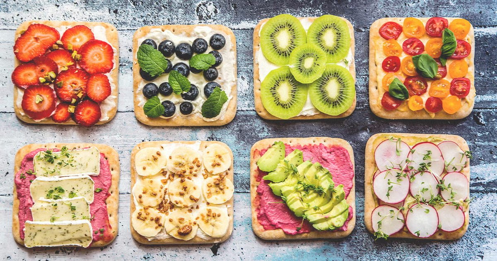

I remember sitting with my sister during her first pregnancy. She was about 20 weeks along and complaining of headaches, constipation, and this weird fatigue that wouldn’t go away no matter how much she slept. Her doctor said everything looked fine. But she felt terrible. I asked her how much she was drinking. She said, “The usual. Maybe six cups of water a day.” She had no idea that pregnancy changes everything about hydration. A non‑pregnant woman needs about 2.2 to 2.7 liters (74‑91 ounces) of total fluid per day, depending on body size and activity. During pregnancy, that number goes up. First trimester adds about 300 milliliters (10 ounces) per day. Second trimester adds 500 milliliters (17 ounces). Third trimester adds 700 to 800 milliliters (24‑27 ounces). By the end, she’s drinking almost a liter more than before she got pregnant. That extra fluid isn’t optional. It goes toward increased blood volume. By the third trimester, a pregnant woman’s blood volume has expanded by almost 50%. That extra blood needs water. It also needs electrolytes. And it needs to be delivered consistently, not in big gulps. My sister was drinking the same amount she always had, which meant she was running a daily deficit of about 500 to 800 milliliters (17‑27 ounces). No wonder she felt terrible. We added a morning 500 mL bottle next to her bed, plus another 500 mL in the afternoon. Her headaches improved within three days. Her constipation took longer, but by the end of the second week she was regular again. She called me and said, “Why did no one tell me this?” That’s the problem. Obstetricians are busy. They check blood pressure, listen to the heartbeat, measure the belly. They don’t always talk about hydration. So I’m going to break it down by trimester. First trimester, weeks 1 to 13. Your baseline is whatever you needed before pregnancy — let’s say 2.2 liters (74 ounces) for a 60‑kilogram woman. Add 300 mL (10 ounces). That brings you to 2.5 liters (85 ounces) total fluid per day. That’s not a huge increase. The bigger challenge in first trimester is morning sickness. If you’re vomiting, you’re losing fluid and electrolytes. Dehydration makes nausea worse. It’s a vicious cycle. The strategy for first trimester is small, frequent sips. Don’t try to chug 500 mL at once. Your stomach is already sensitive. Keep a water bottle with you and take a sip every 10‑15 minutes. Ice chips can be easier to tolerate than liquid water. Ginger tea counts toward your fluid goal — it’s hydrating and can settle your stomach. If you can’t keep anything down, try popsicles or gelatin. Those are mostly water and go down slowly. Electrolytes matter here. Vomiting depletes sodium and potassium. A pinch of salt in your water or a low‑sugar electrolyte drink can help. My sister used a product called Liquid IV, which she said helped her morning sickness more than plain water. That’s anecdotal, but it makes sense. Sodium helps your body retain the fluid you’re taking in. Second trimester, weeks 14 to 27. This is when blood volume starts ramping up. Add 500 mL (17 ounces) to your baseline, so 2.7 liters (91 ounces) total. Your energy might be better now. Morning sickness often fades. But new challenges appear. Constipation is common because progesterone slows down your digestive system. Fluid helps keep things moving. Dehydration makes constipation worse. Also, your kidneys are working harder. You’ll pee more often. That’s normal. But it means you need to keep drinking even though you’re tired of running to the bathroom. Spacing your fluids helps. Drink more in the morning and early afternoon, less in the evening before bed. That way you’re not waking up all night to pee — though you probably will anyway. The second trimester is a good time to build a hydration habit. Keep a 1‑liter (34‑ounce) bottle on your desk or kitchen counter. Finish it by lunch. Refill. Finish by dinner. That’s 2 liters right there. Add a 500 mL morning bottle and you’re done. Simple. Electrolytes are still important, but you can get most of them from food. A banana for potassium, a handful of nuts for magnesium, salted meals for sodium. If you’re craving salt, listen to your body. Within reason. Third trimester, weeks 28 to 40. Add 700‑800 mL (24‑27 ounces) to your baseline. Total fluid needs are now 3 to 3.5 liters (101‑118 ounces) per day. That’s a lot. Your blood volume is at its peak. Your baby is growing fast. Amniotic fluid is being produced and recycled constantly. Plus your body is preparing for labor, which requires adequate hydration for uterine contractions. The challenge in third trimester is physical. Your stomach is squished by the growing baby. You might feel full quickly. You might have heartburn. Drinking large amounts at once can be uncomfortable. So again, small frequent sips. Keep water everywhere — bedside, car, work, purse. Sip constantly. Watch for swelling. Mild edema in the feet and ankles is normal. But sudden swelling in the hands or face could be a sign of preeclampsia. Dehydration can worsen swelling because your body holds onto fluid when it’s worried about supply. Staying hydrated actually helps reduce swelling, counterintuitively. I had a client in her third trimester who was limiting water because she thought it made her swell. Her urine was dark amber. We increased her fluid to 3 liters per day, spaced out, with a pinch of salt in her morning bottle. Her swelling decreased within a week. Her doctor was surprised. I wasn’t. Postpartum and breastfeeding. After delivery, your fluid needs don’t drop immediately. If you’re breastfeeding, you need an additional 700 to 1,000 milliliters (24‑34 ounces) per day on top of your baseline. Breast milk is about 87% water. A typical breastfeeding mom produces 750‑800 mL of milk per day. That’s water that has to come from somewhere. The challenge postpartum is that you’re exhausted, busy, and often forgetful. The baby wakes up at night. You’re not sleeping. Thirst cues get ignored. I recommend keeping a 1‑liter bottle in every room you feed the baby. Take a sip every time the baby latches. That creates a natural pairing. Baby eats, you drink. Dehydration can hurt milk supply. If you’re not drinking enough, your body will still produce milk, but it might pull water from your own tissues. That leaves you dehydrated and drained. I’ve seen new moms with cracked lips, headaches, and dark urine — all fixable with more fluid. Electrolytes are especially important postpartum. You lose magnesium through breast milk. Low magnesium can cause muscle cramps, anxiety, and poor sleep. A small study showed that magnesium supplementation improved sleep quality in postpartum women. I recommend a magnesium glycinate supplement or a daily handful of almonds. Sodium is also important. Some breastfeeding moms crave salt. That’s your body asking for it. Don’t be afraid of salted nuts, pickles, or broth. Warning signs to watch for. Dehydration during pregnancy can trigger premature contractions. If you’re less than 37 weeks and you feel regular contractions, drink 500‑1,000 mL of water and lie down on your left side. If contractions stop, it was dehydration. If they continue, call your doctor. Also watch for dizziness, dark urine (amber or brown), dry mouth, and decreased fetal movement. If you notice less kicking, drink a glass of cold water and lie down. Hydration often wakes the baby up. If movement doesn’t increase within an hour, call your provider. My sister had a scare at 34 weeks. She felt less movement, drank a bottle of water, and within 20 minutes the baby was doing flips. She was just dehydrated. That’s common. Practical tips for pregnancy hydration. Keep a bottle with time markers. Know that you need to finish the 8 AM mark, 10 AM, noon, etc. Use a straw — people drink more through a straw. Infuse water with lemon, cucumber, or mint if plain water feels boring. Set phone reminders. Every hour, drink a glass. If you hate water, try sparkling water, decaf tea, milk, or soup. These all count toward your fluid goal. Just watch caffeine — under 200 mg per day is generally safe during pregnancy. That’s about two cups of coffee. My sister bought a 2.2‑liter (74‑ounce) water bottle with a straw and a handle. She carried it everywhere. By the third trimester, she was finishing it by mid‑afternoon and refilling. She said it was the best $15 she spent. I have a tool that helps pregnant women calculate their individualized goal.Pregnancy & Breastfeeding Hydration Planner
Enter your trimester or whether you’re breastfeeding. Get a daily fluid goal with trimester‑specific tips and warning signs.
All data stays in your browser — we never see it.
Daily Water Intake Calculator
Start with your non‑pregnant baseline, then add the pregnancy adjustments.
All data stays in your browser — we never see it.
Hydration Goal Setter
Set a daily goal and log your intake. The app sends gentle reminders throughout the day.
All data stays in your browser — we never see it.